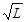

ВЕДОМСТВЕННЫЕ СТРОИТЕЛЬНЫЕ НОРМЫ
ПЕРЕНОС НА
МЕСТНОСТЬ
ОСНОВНЫХ ОСЕЙ СООРУЖЕНИЙ
МЕЛИОРАТИВНЫХ СИСТЕМ
И ВОДОХОЗЯЙСТВЕННЫХ ОБЪЕКТОВ
ВСН 33-2.3.02-87
МИНИСТЕРСТВО МЕЛИОРАЦИИ И ВОДНОГО ХОЗЯЙСТВА СССР
МОСКВА 1987
РАЗРАБОТАНЫ Союзводпроектом Минводхоза СССР (В.М. Маслов)
Укргипроводхозом Минводхоза УССР (А.А. Телятник)
и Главнечерноземводстроем Минводхоза СССР (В.М. Родионов)
ВНЕСЕНЫ Союзводпроектом Минводхоза СССР
ПОДГОТОВЛЕНЫ
К УТВЕРЖДЕНИЮ Главтехупром Минводхоза СССР (С.А.Савченко)
С введением в действие ВСН 33-2.3-02-87 "Перенос на местность основных осей сооружений мелиоративных систем и водохозяйственных объектов" утрачивает силу "Руководство по выносу в натуру проектов строительства оросительных систем", утвержденное приказом В/О "Союзводпроект" от 05.06.74 № 87 и ВСН-2.3.02-85 "Правила переноса на местность основных осей сооружений осушительных систем", утвержденные приказом Минводхоза СССР № 304 от 20.08.85 г.
СОГЛАСОВАНО с Госстроем СССР (письмо от 20 апреля 1987 г. № АЧ-2067-8)
При использовании нормативного документа следует учитывать утвержденные изменения строительных норм и правил, ведомственных строительных норм, государственных и отраслевых стандартов, публикуемых в журнале "Бюллетень строительной техники" Госстроя СССР, информационном указателе "Государственные стандарты СССР" Госстандарта и в приказах Минводхоза СССР.
|
Министерство мелиорации и водного хозяйства СССР (Минводхоз СССР) |
Ведомственные строительные нормы |
ВСН 33-2.3.02-87 |
|
"Перенос на местность основных осей сооружений мелиоративных систем и водохозяйственных объектов" |
Взамен "Руководства по выносу в натуру проектов
строительства оросительных систем" и |
Настоящие ВСН распространяются на геодезические работы при создании разбивочной основы для строительства мелиоративных систем и водохозяйственных объектов, и устанавливают нормы и правила переноса и закрепления на местности основных осей зданий и сооружений, границ объектов мелиорации, контуров планировки, сетки квадратов строительной планировки, границ зон затопления - в организациях системы Минводхоза СССР.
Настоящие ВСН не регламентируют детальную разбивку строительных и монтажных осей зданий и сетевых сооружений, представленных в плане и вертикальных проектных разрезах. В соответствии со СНиП 3.01.03-84 эти работы выполняются в процессе строительства.
|
Внесены В/О "Союзводпроект" |
Утверждены приказом Министерства мелиорации и водного
хозяйства СССР |
Дата введения в действие "1" ноября 1987г. |
1.1. Создание геодезической разбивочной основы для строительства мелиоративных систем и водохозяйственных объектов является обязанностью заказчика и осуществляется, по его поручению, проектно-изыскательскими или другими организациями за счет средств, предусмотренных в главе 1 сводного сметного расчета стоимости строительства.
1.2. Создание геодезической разбивочной основы для строительства мелиоративных и водохозяйственных объектов должно осуществляться после расчистки территории строительства от кустарника и мелколесья и освобождения строительной площадки от строений, подлежащих сносу.
1.3. Геодезические работы должны выполняться в объеме и с точностью, обеспечивающей соответствие геометрических параметров мелиоративных систем и водохозяйственных объектов проекту.
1.4. Перед созданием на местности геодезической разбивочной основы следует разработать разбивочный чертеж (схему) на топографической основе в масштабе генплана.
Разрешается выполнение разбивочного чертежа по отдельным участкам или очередям строительства.
1.5. К разбивочному чертежу (схеме) должны быть приложены каталоги исходных пунктов, ведомости проектных отметок пунктов, закрепляющих основные оси сооружений, чертежи геодезических знаков и пояснительная записка с обоснованием точности построения геодезической разбивочной основы.
1.6. Разбивочный чертеж должен включать в себя:
основные элементы ситуации;
запроектированную осушительную или оросительную сеть;
пункты постоянного и временного закрепления планово-высотного обоснования топографической съемки и трассировки;
проектный пикетаж по основным осям сооружений; величины углов поворота и длины линий по осям сооружений в размерах, принятых конструкцией сооружения; элементы кривых.
Указанная документация выполняется проектной организацией в порядке и в сроки соответствующие принятым стадиям проектирования и очередям строительства и должна быть передана заказчику (подрядчику) в составе проекта.
1.7. Все изменения осей сооружений в плановом и высотном положениях от запроектированных должны быть согласованы главным инженером проекта и нанесены на генплан и продольные профили. К строительству сооружений следует приступать только после создания геодезической разбивочной основы согласно проекту.
1.8. Перенос на местность основных осей сооружений должен производиться по очередям строительства в соответствии с календарным планом строительства. Перечень сооружений и сроки переноса могут быть изменены по согласованию с заинтересованными организациями.
1.9. Заказчик обязан обеспечить создание геодезической разбивочной основы для строительства и не менее чем за 10 дней до начала выполнения строительно-монтажных работ передать подрядчику техническую документацию на нее и закрепленные на местности геодезические пункты (с освидетельствованием их в натуре).
По перенесенным на местность основным осям линейных сооружений произвести техническое нивелирование и по его результатам составить графические продольные профили (по дренам - писаный профиль).
Максимально следует использовать продольные профили, составленные на стадии изысканий и в процессе проектирования.
2.1. Геодезической разбивочной основой для строительства являются закрепленные на местности геодезическими знаками основные оси сооружений, относительно которых должна производиться детальная разбивка строительных и монтажных осей зданий и сооружений.
2.2. При создании геодезической разбивочной основы в плановом и высотном положениях должна быть обеспечена связь с имеющимися в районе строительства пунктами государственной геодезической сети и пунктами съемочного обоснования на объекте.
2.3. Работы и точность построения геодезической разбивочной основы, должны выполняться в соответствии с требованиями СНиП 3.01.03-84, ВСН 33-2.1.07-87 и нижеприведенной таблицы.
|
№№ п.п. |
Наименование сооружений |
Допустимые отклонения основных осей сооружений от проекта в масштабе плана, мм |
|
1. |
Плотины бетонные, каналы, шлюзы, здания насосных станций, мосты, дренажные коллекторы, дрены, трубопроводы, дамбы, границы контуров планировки |
0,5 |
|
2. |
Плотины земляные |
1,0 |
|
3. |
Линии электропередачи и связи, дороги |
0,4 |
3.1. Для строительства осушительных систем перенесению на местность подлежат основные оси следующих сооружений: каналов, коллекторов, дрен, мостов, трубчатых переездов, дамб, дорог, ЛЭП, насосных станций и других сооружений, а также оси регулируемых водотоков, границы объектов мелиорации, границы контуров планировки и ложбины.
3.5. Перенос на местность осей линейных сооружений должен сопровождаться разбивкой пикетажа через 100 м и в характерных местах изменения рельефа.
3.6. По осям коллекторов и дрен следует разбивать пикетаж через 20 м, а при применении в строительных механизмах лазерного прибора - через 40 м. При этом одновременно необходимо закреплять деревянными кольями места изменения уклонов коллекторов и дрен, и местоположение смотровых колодцев.
3.7. По установленным выносным знакам и
пикетам следует выполнить техническое нивелирование. Ходы технического
нивелирования должны образовывать замкнутые
системы и опираться не менее чем на три репера геодезической сети. Между
исходными реперами допустимая невязка в мм не должна превышать ± 30 
3.8. Закрепленные на местности основные оси линейных сооружений осушительных систем необходимо нанести на 2-х экземплярах генерального плана или его фрагментов.
3.9. Генеральный план или его фрагменты с нанесенной на них геодезической разбивочной основой и профили сооружений подлежат длительному хранению (один экземпляр - у заказчика, второй - у организации - исполнителя).
4.1. При переносе на местность осей регулируемых водотоков их необходимо закреплять геодезическими знаками в начале, середине и конце каждого спрямления.
4.2. По оси регулируемого водотока следует разбивать пикетаж. Нумерация пикетов должна быть единой на протяжении всего водотока от устья до истока и соответствовать нумерации, принятой проектом.
4.3. При разбивке пикетажа по оси водотока следует закреплять начало, середину и конец кривой. В случае невозможности непосредственного закрепления элементов кривой, должны быть установлены выносные знаки.
5.1. Для строительства оросительных систем перенесению на местность подлежат основные оси следующих сооружений: каналов, трубопроводов, коллекторно-дренажной сети, мостов, дюкеров, акведуков, шлюзов, плотин, дамб, дорог, ЛЭП, ЛЭС, насосных станций, центры опор для подключения дождевальных машин и других сооружений, а также границы объектов мелиорации и зон затопления водохранилищами.
5.2. Точность переноса основных осей сооружений оросительных систем, должна соответствовать требованиям раздела 2.3. настоящих ВСН.
5.3. Для перенесения и закрепления основных осей гидроузлов и зданий насосных станций на площадке строительства следует создавать самостоятельную геодезическую сеть, согласно ВСН 33-2.1.07-87. Основная ось сооружения должна быть закреплена геодезическими знаками, установленными в местах, обеспечивающих их сохранность - вне зоны строительных работ.
5.4. При переносе на местность осей трубопроводов кривые на углах поворота не разбиваются.
5.5. Положение чековых валиков на рисовых севооборотах должны устанавливать строительные организации в процессе строительства от осей картовых оросительных и сбросных каналов.
5.6. Оси сооружений, расположенные параллельно и проходящие на расстоянии не более - 20 м друг от друга следует переносить на местность в соответствии с требованиями п. 3.2 настоящих ВСН.
5.7. Закрепление основных осей сооружений оросительных систем необходимо производить в соответствии с требованиями пп. 3.3, 3,4 настоящих ВСН.
6.1. При переносе проекта планировки на местность следует закрепить вершины квадратов планировки. Размер сторон квадратов должен быть согласован с заказчиком.
6.2. Основой для переноса на местность сетки квадратов служит проект планировки, на генплане которого должны быть показаны необходимые для привязки геодезические знаки. Относительная ошибка измерения сторон квадратов не должна превышать 1/2000 при длине стороны квадрата 200 м.
7.1. В качестве основы для переноса на местность ВЛ6-10 кВ и ЛЭП35-110 кВ служат: разбивочный чертеж, профиль трассы и ведомость расстановки опор. Центры опор должны закрепляться деревянными столбами и металлическими уголками на глубину 0,5 м и маркироваться.
Для ВЛ6-10 кВ следует закреплять угловые опоры, для ЛЭП 35-110 кВ - каждую опору.
8.1. Перенос на местность осей дорог на объектах мелиорации следует производить согласно требованиям СНиП 3.01.03-84 "Геодезические работы в строительстве" и настоящих ВСН.
8.2. Перенос на местность осей дорог, проходящих вдоль каналов и других линейных сооружений необходимо совмещать с переносом на местность их осей.
8.3. При расположении дороги под углом по отношению к каналу или другому линейному сооружению, по оси дороги необходимо проложить теодолитный ход с разбивкой пикетажа через 100 м и в местах резкого изменения рельефа. Начало, конец и углы поворота кривых следует закрепить геодезическими знаками.
8.4. Вдоль дороги, за пределами полосы отчуждения следует установить через 0,5 км геодезические знаки.
8.5. Перенос на местность границ объекта мелиорации необходимо производить до начала строительства с закреплением углов поворота и прямых участков длиной более 500 м геодезическими знаками.
9.1. Контроль и приемку работ по перенесению на местность основных осей сооружений осушительных и оросительных систем от организаций-исполнителей осуществляет заказчик с участием строительной организации (подрядчика).
9.2. Перенесенные и закрепленные на местности оси сооружений сдаются по акту (Приложение № 1), составленному в двух экземплярах, один из которых передается подрядчику (заказчику), второй - организации-исполнителю.
9.3. По окончании работ по перенесению на местность осей сооружений заказчику передается следующая техническая документация:
разбивочный чертеж в масштабе генплана с внесенными изменениями и уточнениями;
ведомость высот знаков закрепления осей сооружений;
продольные профили линейных сооружений (графические или писаные по согласованию с заказчиком);
пояснительная записка.
|
АКТ сдачи перенесенных на местность основных осей сооружений на объекте ___________ " __ "_____________ 19__ г. __________________________________________________ Настоящий акт составлен представителем____________________________________ __________________________________________________________________________ __________________________________________________________________________ (организация, должность, фамилия) с одной стороны и представителями ___________________________________________ __________________________________________________________________________ с другой стороны в том, что представитель _____________________________________ __________________________________________________________________________ _________________________________ сдал, (а) представители ____________________ (название организации) __________________________________________________________________________ (организации) приняли закрепленные на местности оси сооружений геодезические пункты ! геодезические знаки ! установлены в виде: ___________________________________ _____________________________________ Ведомость сооружений
Работу сдал: Представитель организации-исполнителя ____________________________________ Работу принял: Технадзор заказчика ______________________________________________________ Представитель подрядчика (строительной организации) ______________________________________________ |
СОДЕРЖАНИЕ